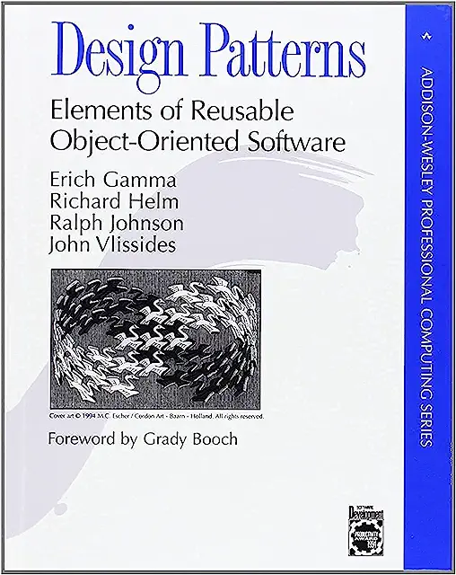
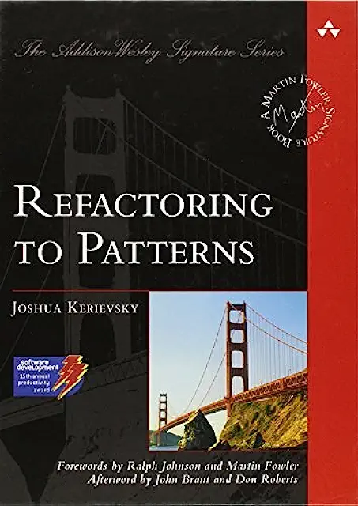

class: slide-title <p> <a href="https://third-bit.com/sdxpy/">Software Design by Example</a> </p> <h1>Matching Patterns</h1> <div class="bottom"> <a href="../">chapter</a> </div> --- ## The Problem - `glob.glob` finds files whose names match patterns - `2023-*.{pdf,txt}` matches `2023-01.txt` and `2023-final.pdf` but not `draft-2023.docx` <figure> <img src="../examples.svg" alt="Matching examples"/> </figure> - How does this work? --- class: aside ## Why "Globbing"? - Early versions of Unix had a tool called `glob` - People used pattern matching so often that it was quickly built into the shell --- ## Write a Few Tests | Pattern | Text | Match? || Pattern | Text | Match? | | ------- | -------- | ------ || ------- | -------- | ------ | | abc | "abc" | True || a*c | "abc" | True | | ab | "abc" | False || {a,b} | "a" | True | | abc | "ab" | False || {a,b} | "c" | False | | * | "" | True || {a,b} | "ab" | False | | * | "abc" | True || *{x,y} | "abcx" | True | --- ## Objects vs. Functions - Create matchers for particular cases instead of one big function - Some of those matchers need extra data - E.g., which literal characters to match - So create objects --- ## Design Patterns - Use the <a class="gl-ref" href="../../glossary/#gl:chain_of_responsibility_pattern" title="A design pattern in which each object either handles a request or passes it on to another object." markdown="1">Chain of Responsibility</a> pattern - Each object matches if it can… - …then asks something else to try to match the rest of the text <figure> <img src="../chain.svg" alt="Chain of Responsibility"/> </figure> --- ## Matching a Literal String ```py class Lit: def __init__(self, chars, rest=None): self.chars = chars self.rest = rest def match(self, text, start=0): end = start + len(self.chars) if text[start:end] != self.chars: return False if self.rest: return self.rest.match(text, end) return end == len(text) ``` - `chars` is the characters to be matched - `rest` is the rest of the chain (or `None`) - `start` is needed when this isn't the first matcher --- ## Testing the Matcher ```py def test_literal_match_entire_string(): # /abc/ matches "abc" assert Lit("abc").match("abc") def test_literal_substring_alone_no_match(): # /ab/ doesn't match "abc" assert not Lit("ab").match("abc") def test_literal_superstring_no_match(): # /abc/ doesn't match "ab" assert not Lit("abc").match("ab") ``` - Give tests long names to make failure reports immediately readable --- ## Does Chaining Work? - Try to find flaws in the design as early as possible - So test chaining before writing more matchers ```py def test_literal_followed_by_literal_match(): # /a/+/b/ matches "ab" assert Lit("a", Lit("b")).match("ab") def test_literal_followed_by_literal_no_match(): # /a/+/b/ doesn't match "ac" assert not Lit("a", Lit("b")).match("ac") ``` --- class: aside ## Test-Driven Development - Some people write tests *before* writing code to clarify the design - And to ensure they actually write tests - Research shows the order doesn't matter <span class="bib-ref">[<a class="bib-ref" href="../../bib/#Fucci2016">Fucci2016</a>]</span> - What *does* is alternating between short bursts of coding and testing --- ## Wildcards - `*` can match zero or more characters - If it's the last matcher, it always succeeds - Otherwise try zero characters, one, two, etc. characters ```py class Any: def __init__(self, rest=None): self.rest = rest def match(self, text, start=0): if self.rest is None: return True for i in range(start, len(text)): if self.rest.match(text, i): return True return False ``` --- ## And We Test It ```py def test_any_matches_empty(): # /*/ matches "" assert Any().match("") def test_any_matches_entire_string(): # /*/ matches "abc" assert Any().match("abc") def test_any_matches_as_prefix(): # /*def/ matches "abcdef" assert Any(Lit("def")).match("abcdef") def test_any_matches_as_suffix(): # /abc*/ matches "abcdef" assert Lit("abc", Any()).match("abcdef") def test_any_matches_interior(): # /a*c/ matches "abc" assert Lit("a", Any(Lit("c"))).match("abc") ``` --- ## Matching Alternatives ```py class Either: def __init__(self, left, right, rest=None): self.left = left self.right = right self.rest = rest def match(self, text, start=0): return self.left.match(text, start) or \ self.right.match(text, start) ``` --- ## And We Test It ```py def test_either_two_literals_first(): # /{a,b}/ matches "a" assert Either(Lit("a"), Lit("b")).match("a") def test_either_two_literals_not_both(): # /{a,b}/ doesn't match "ab" assert not Either(Lit("a"), Lit("b")).match("ab") ``` --- ## But Wait… ```py def test_either_followed_by_literal_match(): # /{a,b}c/ matches "ac" assert Either(Lit("a"), Lit("b"), Lit("c")) def test_either_followed_by_literal_no_match(): # /{a,b}c/ doesn't match "ax" assert not Either(Lit("a"), Lit("b"), Lit("x")) ``` ``` ======================= test session starts ======================== test_glob_problem.py .F [100%] ===================== short test summary info ====================== FAILED test_glob_problem.py::test_either_followed_by_literal_no_match =================== 1 failed, 1 passed in 0.01s ==================== ``` - `Either` doesn't handle `rest` properly --- ## Rethinking - We now have three matchers with the same interfaces - <a class="gl-ref" href="../../glossary/#gl:refactor" title="To rewrite existing code in order to make it simpler or more efficient without changing its functionality." markdown="1">Refactor</a> using <a class="gl-ref" href="../../glossary/#gl:extract_parent_class_refactoring" title="A refactoring in which some functionality of an existing class or set of classes is moved into a newly-created parent class." markdown="1">Extract Parent Class</a> - The test `if self.rest is None` appears several times - Use the <a class="gl-ref" href="../../glossary/#gl:null_object_pattern" title="A design pattern in which a placeholder object is used instead of `None`. The placeholder object has the methods of the object usually used, but those methods do nothing. This pattern saves other code from having to check repeatedly for `None`." markdown="1">Null Object</a> pattern instead <figure> <img src="../refactoring.svg" alt="Refactoring matchers"/> </figure> --- class: aside ## We Didn't Invent This <div class="center">  <img src="../fowler-refactoring.webp" alt="Refactoring book cover" width="25%"/>  </div> - <span class="bib-ref">[<a class="bib-ref" href="../../bib/#Tichy2010">Tichy2010</a>]</span> showed that learning these patterns makes people better programmers --- ## The Parent Class ```py class Match: def __init__(self, rest): self.rest = rest if rest is not None else Null() def match(self, text): result = self._match(text, 0) return result == len(text) ``` - Assume every child class has a `_match` method - This method returns the location to continue searching - So `Match.match` checks that we've reached the end of the text --- ## The Null Object Class ```py class Null(Match): def __init__(self): self.rest = None def _match(self, text, start): return start ``` - Must be the last one in the chain - Doesn't advance the match (i.e., does nothing) - Every other class can now delegate to its `next` without checking for `None` --- ## Refactoring Literal Matcher ```py class Lit(Match): def __init__(self, chars, rest=None): super().__init__(rest) self.chars = chars def _match(self, text, start): end = start + len(self.chars) if text[start:end] != self.chars: return None return self.rest._match(text, end) ``` - Ask parent class to do common initialization - Return `None` for "no match" or whatever `self.rest` returns - If `rest` is `Null`, result will be the index after this object's match --- ## Refactoring Wildcard ```py class Any(Match): def __init__(self, rest=None): super().__init__(rest) def _match(self, text, start): for i in range(start, len(text) + 1): end = self.rest._match(text, i) if end == len(text): return end return None ``` - The exercises will ask, "Why `len(text) + 1`?" --- ## Refactoring Alternatives ```py class Either(Match): def __init__(self, left, right, rest=None): super().__init__(rest) self.left = left self.right = right def _match(self, text, start): for pat in [self.left, self.right]: end = pat._match(text, start) if end is not None: end = self.rest._match(text, end) if end == len(text): return end return None ``` - Looping over left and right options is simpler than repeating code or writing a helper method - Could easily be extended to any number of alternatives --- ## Testing - None of the existing tests change - None of the constructors changed - Neither did the signature of `match` - We should (should) add a couple of tests for `Null` - But basically we're done - And we can easily add matchers for other kinds of patterns --- class: summary ## Summary <figure> <img src="../concept_map.svg" alt="Concept map of globbing"/> </figure> [academic_prototyping]: https://www.fuzzingbook.org/html/AcademicPrototyping.html [apache]: https://httpd.apache.org/ [ark]: https://www.dmulholl.com/docs/ark/main/ [aosa]: https://aosabook.org/ [beautiful_soup]: https://beautiful-soup-4.readthedocs.io/ [beuchat_odin]: https://www.drafolin.ch/ [big_little_endian]: https://en.wikipedia.org/wiki/Endianness [birthday_problem]: https://en.wikipedia.org/wiki/Birthday_problem [black]: https://black.readthedocs.io/ [book_repo]: https://github.com/gvwilson/sdxpy/ [book_site]: https://third-bit.com/sdxpy/ [browser_engine_tutorial]: https://limpet.net/mbrubeck/2014/08/08/toy-layout-engine-1.html [browser_engineering]: https://browser.engineering/ [brubeck_matt]: https://limpet.net/mbrubeck/ [cc_by_nc]: https://creativecommons.org/licenses/by-nc/4.0/ [cc_by_nc_legal]: https://creativecommons.org/licenses/by-nc/4.0/legalcode [clarkes_laws]: https://en.wikipedia.org/wiki/Clarke%27s_three_laws [contributor_covenant]: https://www.contributor-covenant.org/ [cook_mary_rose]: https://maryrosecook.com/ [crafting_interpreters]: https://craftinginterpreters.com/ [ctan]: https://www.ctan.org/ [cypress]: https://www.cypress.io/ [db_tutorial]: https://cstack.github.io/db_tutorial/ [draw_io]: https://app.diagrams.net/ [dresser_christopher]: https://en.wikipedia.org/wiki/Christopher_Dresser [ejs]: https://ejs.co/ [email]: mailto:gvwilson@third-bit.com [eniac_programmers]: http://eniacprogrammers.org/ [ethical_source]: https://ethicalsource.dev [evans_julia]: https://jvns.ca/ [evans_zines]: https://wizardzines.com/ [expect]: https://en.wikipedia.org/wiki/Expect [flake8]: https://flake8.pycqa.org/ [git]: https://git-scm.com/ [git_man_page_generator]: https://git-man-page-generator.lokaltog.net/ [gitbook]: https://www.gitbook.com/ [gitlet]: http://gitlet.maryrosecook.com/ [glosario]: https://glosario.carpentries.org/ [gnu_make]: https://www.gnu.org/software/make/ [gorcenski_emily]: https://emilygorcenski.com/post/book-report-software-design-by-example-by-greg-wilson/ [gutenberg]: https://www.gutenberg.org/ [harrelson_chris]: https://twitter.com/chrishtr [hippocratic_license]: https://firstdonoharm.dev/ [hoye_mike]: http://exple.tive.org/blarg/ [html5_data_attributes]: https://developer.mozilla.org/en-US/docs/Learn/HTML/Howto/Use_data_attributes [human_resource_machine]: https://tomorrowcorporation.com/humanresourcemachine [isort]: https://pycqa.github.io/isort/ [jamstack_ssg]: https://jamstack.org/generators/ [jekyll]: https://jekyllrb.com/ [json_schema]: https://json-schema.org/ [jupybook]: https://jupyterbook.org/ [kerr_jessica]: https://jessitron.com/2023/02/20/book-review-software-design-by-example/ [kilo_editor]: https://viewsourcecode.org/snaptoken/kilo/index.html [latex]: https://www.latex-project.org/ [loewy_raymond]: https://en.wikipedia.org/wiki/Raymond_Loewy [lorgat_editor]: https://github.com/seem/editor [lorgat_tutorial]: https://wasimlorgat.com/posts/editor.html [lorgat_wasim]: https://wasimlorgat.com/ [marthas_rules]: https://journals.sagepub.com/doi/10.1177/088610998600100206 [nano]: https://www.nano-editor.org/ [navarro_danielle]: https://blog.djnavarro.net/posts/2023-05-31_software-design-by-example/ [nginx]: https://nginx.org/ [nison_mael]: https://arcanis.github.io/ [nystrom_bob]: http://journal.stuffwithstuff.com/ [package_manager_tutorial]: https://classic.yarnpkg.com/blog/2017/07/11/lets-dev-a-package-manager/ [panchekha_pavel]: https://pavpanchekha.com/ [pexpect]: https://pexpect.readthedocs.io/ [php]: https://www.php.net/ [picosat]: http://fmv.jku.at/picosat/ [pip]: https://pip.pypa.io/ [programming_tools]: https://en.wikipedia.org/wiki/Programming_tool [punching_holes]: http://exple.tive.org/blarg/2020/11/26/punching-holes/ [py_array]: https://docs.python.org/3/library/array.html [py_ast]: https://docs.python.org/3/library/ast.html [py_chainmap]: https://docs.python.org/3/library/collections.html#collections.ChainMap [py_collections]: https://docs.python.org/3/library/collections.html [py_cprofile]: https://docs.python.org/3/library/profile.html [py_curses]: https://docs.python.org/3/library/curses.html [py_fractions]: https://docs.python.org/3/library/fractions.html [py_glob]: https://docs.python.org/3/library/glob.html [py_hashlib]: https://docs.python.org/3/library/hashlib.html [py_http_server]: https://docs.python.org/3/library/http.server.html [py_inspect]: https://docs.python.org/3/library/inspect.html [py_io]: https://docs.python.org/3/library/io.html [py_itertools]: https://docs.python.org/3/library/itertools.html [py_json]: https://docs.python.org/3/library/json.html [py_jsonschema]: https://python-jsonschema.readthedocs.io/ [py_mimetypes]: https://docs.python.org/3/library/mimetypes.html [py_pickle]: https://docs.python.org/3/library/pickle.html [py_pprint]: https://docs.python.org/3/library/pprint.html [py_property]: https://docs.python.org/3/library/functions.html#property [py_semver]: https://pypi.org/project/semantic-version/ [py_socketserver]: https://docs.python.org/3/library/socketserver.html [py_struct]: https://docs.python.org/3/library/struct.html [py_textwrap]: https://docs.python.org/3/library/textwrap.html [py_urlparse]: https://docs.python.org/3/library/urllib.parse.html [py_yaml]: https://pyyaml.org/wiki/PyYAMLDocumentation [pyfakefs]: https://pytest-pyfakefs.readthedocs.io/ [pypi]: https://pypi.org/ [pytest]: https://docs.pytest.org/ [pytest_approx]: https://docs.pytest.org/en/4.6.x/reference.html#pytest-approx [python]: https://www.python.org/ [quarto]: https://quarto.org/ [red_door]: https://www.reddoorshelter.ca/ [reim_michael]: https://elderlinux.org/ [remark]: https://remarkjs.com/ [requests]: https://requests.readthedocs.io/ [ruten_paige]: https://viewsourcecode.org/ [schiffer_jenn]: https://mastodon.social/@jenn@pixel.kitchen/109985276835264400 [scons]: https://www.scons.org/ [selenium]: https://www.selenium.dev/ [semver_spec]: https://semver.org/ [simpy]: https://simpy.readthedocs.io/ [sinel_joseph]: https://en.wikipedia.org/wiki/Joseph_Claude_Sinel [snakemake]: https://snakemake.readthedocs.io/ [sqlalchemy]: https://www.sqlalchemy.org/ [sqlite]: https://sqlite.org/ [stack_connor]: https://connorstack.com/ [t3_personas]: https://teachtogether.tech/en/index.html#s:process-personas [textualize_fraction]: https://www.textualize.io/blog/posts/7-things-about-terminals [udhr]: https://www.un.org/en/universal-declaration-human-rights/ [ungc]: https://www.unglobalcompact.org/what-is-gc/mission/principles [unicode]: https://www.unicode.org/ [unix_glob]: https://en.wikipedia.org/wiki/Glob_(programming) [unix_packaging]: https://eerielinux.wordpress.com/2017/08/15/the-history-of-nix-package-management/ [webaim_wave]: https://wave.webaim.org/ [write_yourself_a_git]: https://wyag.thb.lt/ [z3]: https://en.wikipedia.org/wiki/Z3_Theorem_Prover [zeller_andreas]: https://andreas-zeller.info/